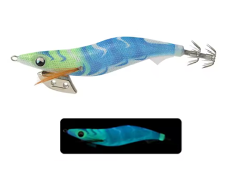

Egis Low Cost
Inicio
Señuelos
YAMASHITA
DTD
YO-ZURI
LETOYO
KINGDOM
SQUID KING
OTROS
Componentes
Color Egis
Acerca de
Letoyo Neon Bright-A – Análisis completo

🎨 Características
Color base:
Azul intenso con patrones ondulados verde-amarillos que simulan reflejos bioluminiscentes.
Ojos:
Verdes con alto contraste, claramente visibles incluso en condiciones de muy baja luz.
Brillo:
Luminiscencia azul-verde muy potente, visible a gran distancia bajo el agua.
Acabado:
Cuerpo textil translúcido que potencia el efecto glow, aumentando la atracción visual.
🌤️ Condiciones ideales de uso
🌙
Noche:
Su luminiscencia intensa lo convierte en un egi extremadamente efectivo en pesca nocturna.
☁️
Días nublados:
Mantiene alta visibilidad incluso sin luz directa.
🌊
Aguas turbias u oscuras:
El brillo azul-verde destaca claramente frente al fondo.
🌅
Amanecer / atardecer:
Ideal cuando la luz comienza a caer y los calamares entran en actividad.
🪸
Fondos rocosos:
El glow resalta entre sombras, ayudando a localizar el señuelo.
🧠 Comportamiento esperado
👉 Egi de atracción muy activa, pensado para provocar ataques rápidos.
👉 Especialmente eficaz con calamares agresivos o en momentos de alta actividad.
👉 El fuerte efecto glow permite que sea localizado rápidamente incluso desde lejos.
👉 Ideal cuando otros colores más naturales pasan desapercibidos.
⚙️ Resumen práctico
Condición
Eficiencia
☀️🌊 Día soleado / agua clara
🟡 Media
☁️💙 Día nublado / aguas medias
🟢 Alta
🌙🌑 Noche / aguas oscuras
🟢🟢 Muy alta
🦑😴 Calamares pasivos
🟡 Media
🦑🔥 Calamares agresivos
🟢🟢 Muy alta
🛒 Comprar opción 1